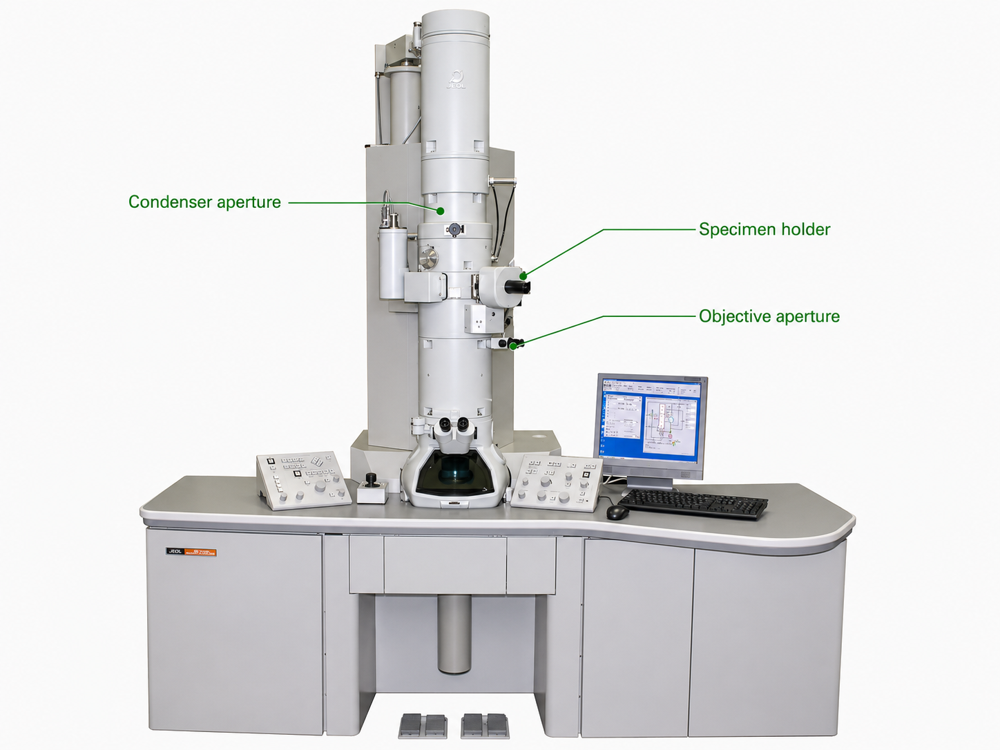

VAC VENTED
BEAM OFF
HT 80 kV READY
IIT SOP · BEGINNER GUIDED WORKFLOW
MODE SETUP
MAG —
Step 1 / 1
Preparing section…
Why: —
ELECTRON OPTICAL COLUMN

Column statusSPECIMEN NOT LOADED
Fluorescent viewing screen·Setup
CLICK THE HIGHLIGHTED FEATURE
Live FFT · RTFFT
Acc.80 kV
HTREADY
FilamentOFF
BeamOFF
VacuumVENTED
ModeMAG1
LIVE CAMERA PREVIEW
Exposure200 ms
ModeBF
0%
SECTION COMPLETE
Section complete
Moving automatically to the next section…